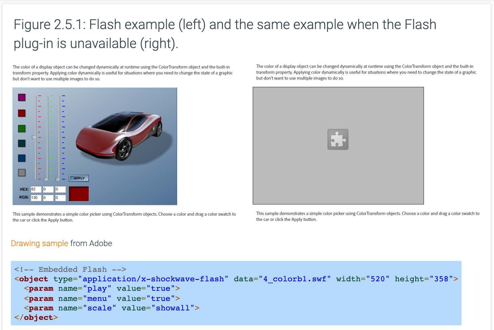
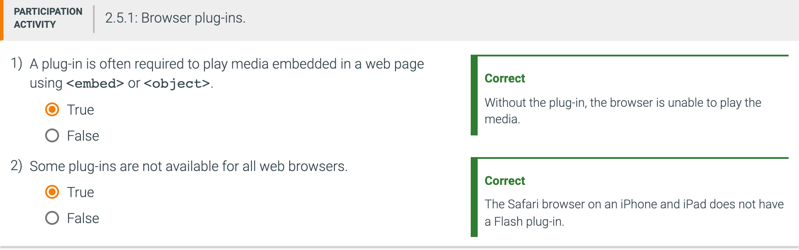
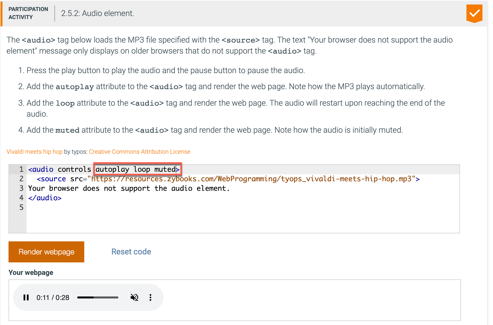
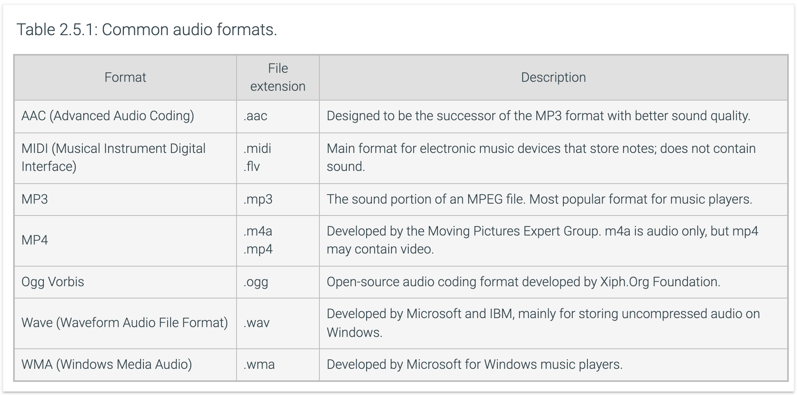
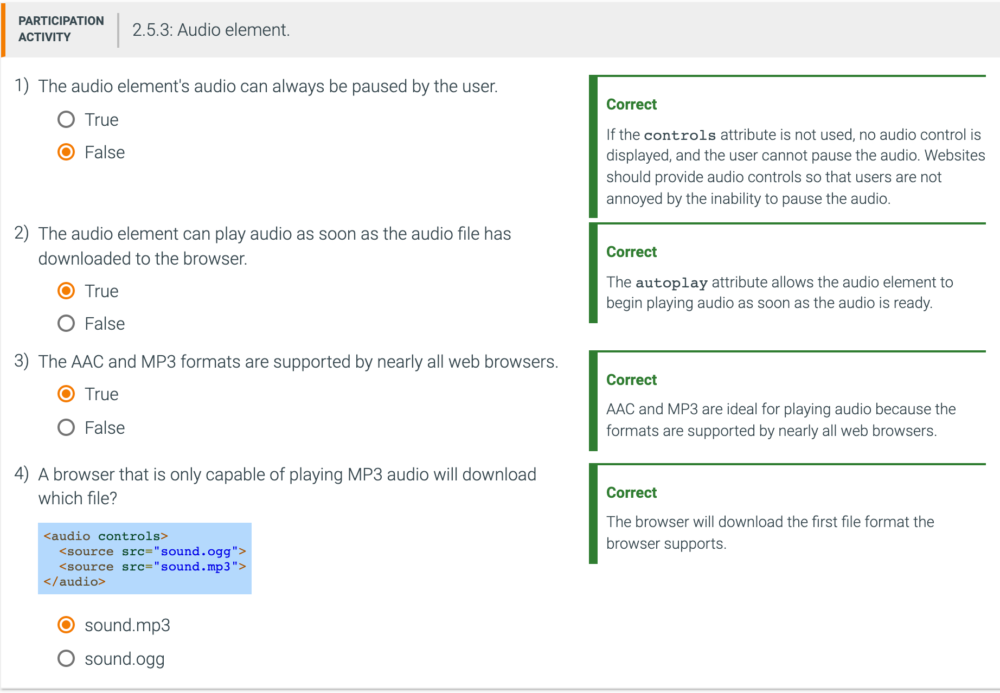
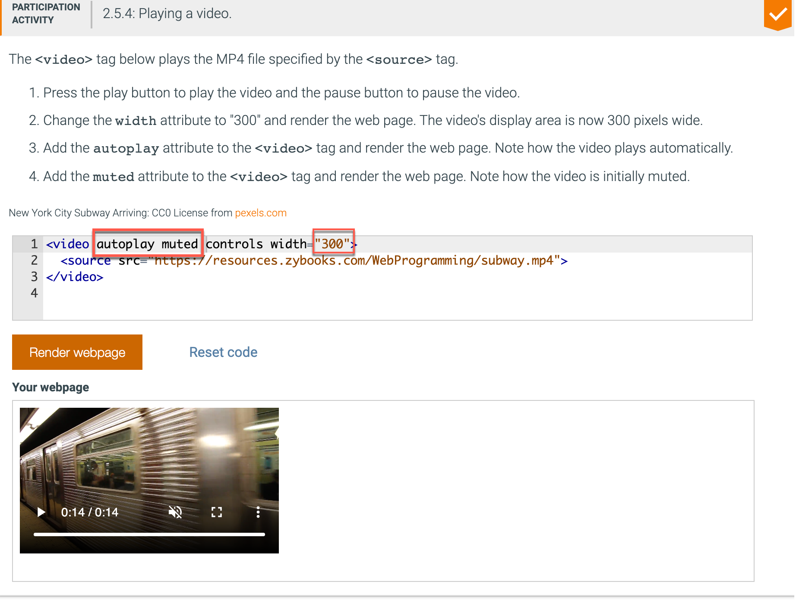
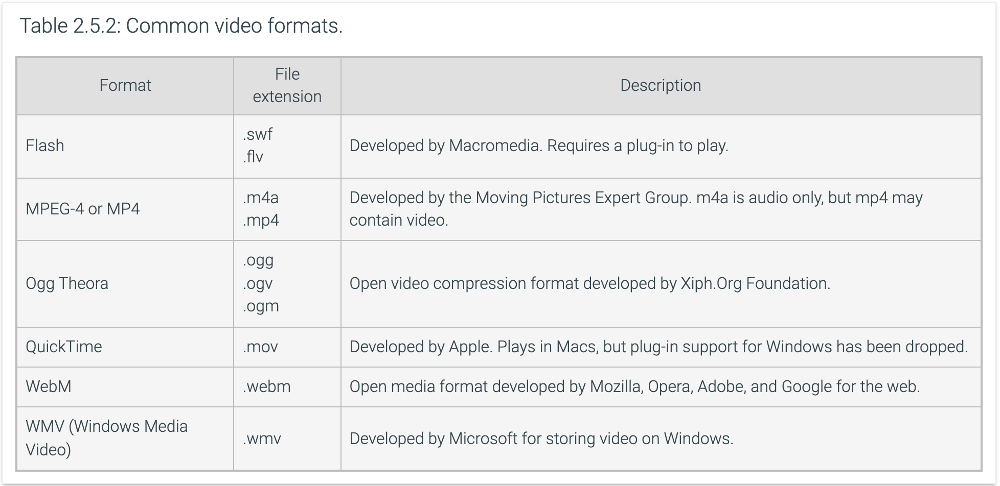
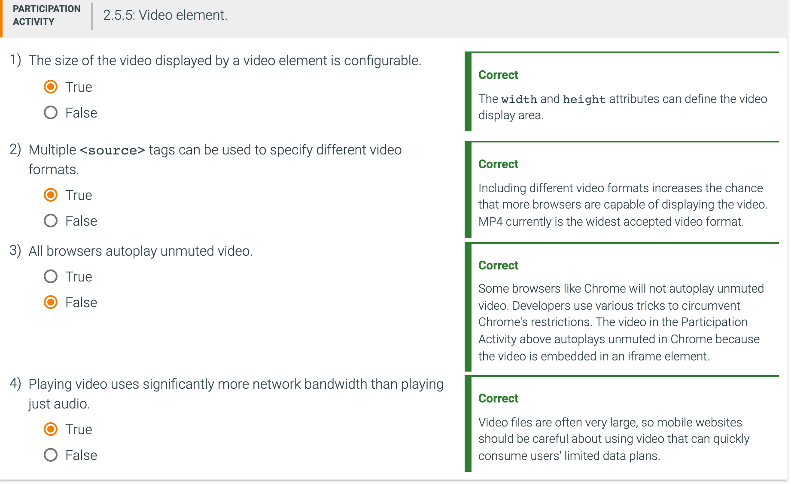
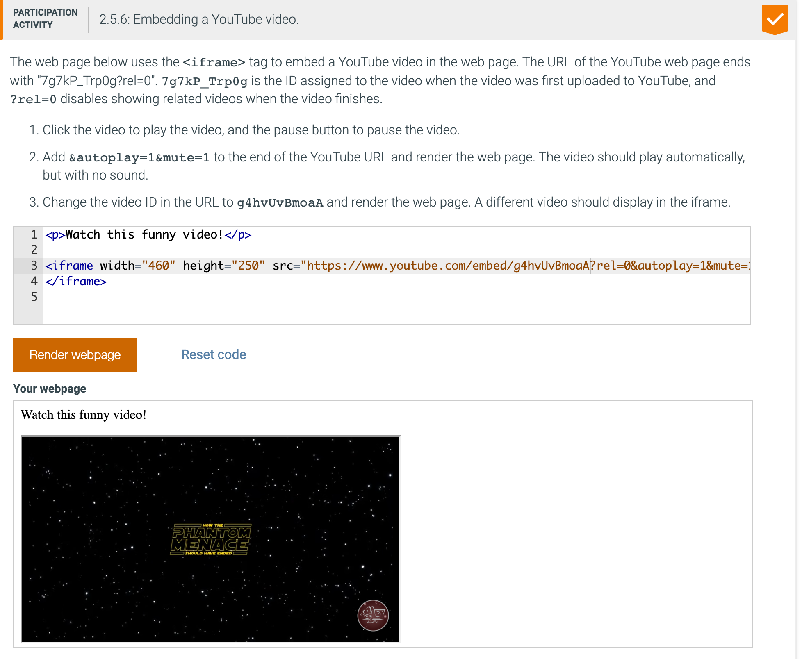
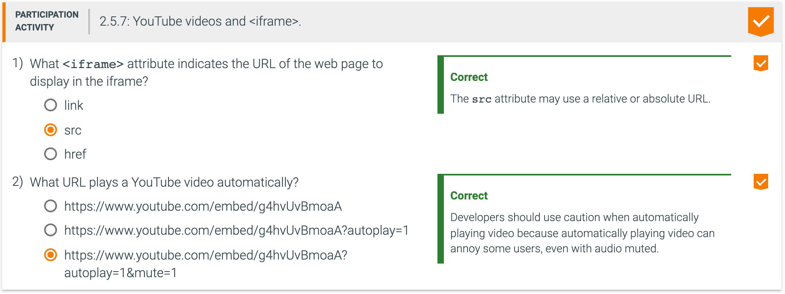

A website may play media files consisting of audio or video for website visitors. Prior to HTML5, developers used <embed> and <object> elements to embed audio or video in a web page. The embedded audio or video required browser plug-ins to play the media. A browser plug-in is software that can properly read and interpret a file format that the browser cannot. Ex: The Flash Player plug-in allows a browser to play Flash files. Plug-ins have traditionally been a source of security risks for web browsers, and some browsers have stopped supporting some types of plug-ins.


The <audio> element plays an audio file in a web page. The <source> element is used inside the <audio> tag to specify an audio file to play. Some common lt;audiogt; attributes include:
Note: Some browsers block <audio autoplay> from autoplaying so users are not jolted with sound when visiting a web page.

Different web browsers support different audio formats, so multiple <source> tags can be used to supply alternate file formats. The MP3 and AAC formats have wide browser support.


The <video> element displays a video in a web page. The <source> element is used in a <video> tag to specify the name of the video file to play. Some common <video> attributes include:
Some browsers will not autoplay a video unless the video is muted. Ex: <video autoplay muted> will play a muted video successfully in all browsers. Muted video is less jarring to users when visiting a web page.

Different web browsers support different video formats, mainly because of patent issues. Multiple <source> tags can be used to supply alternate file formats. MP4, WebM, and Ogg are ideal video formats for playing video on the web.


The audio and video elements can be controlled with JavaScript. Ex: JavaScript can start and stop audio, change the volume, and jump to a specific location in a video. See the HTMLMediaElement link in Exploring further below for a list of JavaScript properties and methods to control audio and video.
A YouTube video may be embedded in a web page with the <iframe> element. The <iframe> element allows a web page to be embedded in a rectangular area of the current web page. The <iframe> element uses the src attribute to specify the URL of the web page to display and the width and height attributes to define the width and height in pixels of the rectangular iframe.
The YouTube Help pages give instructions for uploading a video to YouTube and embedding a video into a web page.

Here's the iframe code:
<iframe width="460" height="250" src="https://www.youtube.com/embed/g4hvUvBmoaA?rel=0&autoplay=1&mute=1"> </iframe>
